Aplikacija 'Mapa Prirodnih Spomenika' sluzi za vodjenje evidencije o prirodnim spomenicima sirom sveta. Ima mogucnost dodavanja cuvanja osnovnih informacija o prirodnim spomenicima, tipovima spomenika i njihovim etiketama. Spomenike prikazuje u listi ali takodje i na mapi sveta.
Dodavanje spomenika se vrsi klikom na dugme 'Dodaj spomenik'. Klikom na to dugme otvara se novi dijalog koji sluzi za unos osnovnih informacija o spomeniku. Dijalog je prikazan na sledecoj slici.
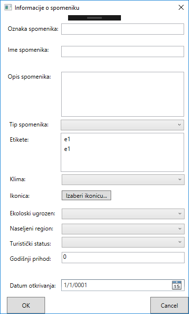Nakon popunjavanja svih potrenih informacija u dijalogu za unos i klikanja na dugme 'OK', kreira se novi spomenik i prikazuje se u listi sa desne strane glavnog prozora kao na sledecoj slici.
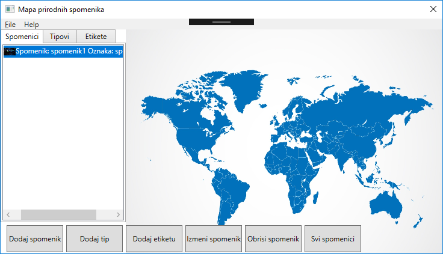Nako toga korisnik ima mogucnost da prevuce spomenik na mapu, kada to ucini na mapi ce se isctati ikonica spomenika koja predstavlja sliku koju je korisnik izabrao za ikonicu spomenika. Kao na sledecoj slici.
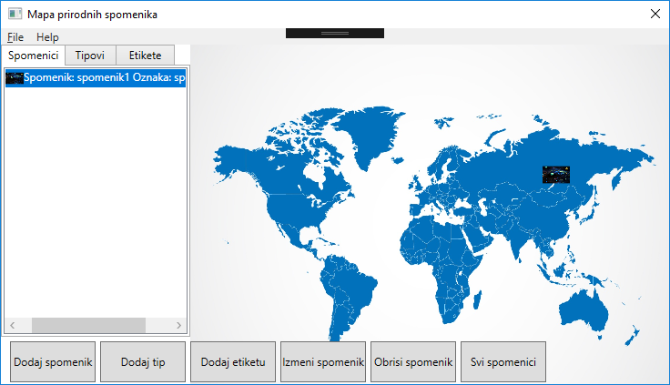Dodavanje novog tipa i etikete vrsi se na slican nacin kao i dodavanje novog spomenika. Pored dugmeta 'Dodaj spomenik' nalaze se dugmad 'Dodaj tip' i 'Dodaj etiketu'. Klikanjem na njih otvaraju se dijalozi za unos osnovnih informacija o tipu spomenika i etiketi respektivno. Kao na sledecoj slici.
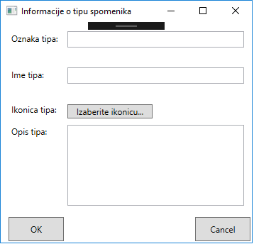 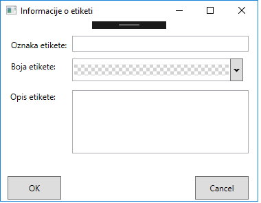Nakon dodavanja tipa spomenika ili etikete takodje se u glavnom prozoru prikaze novonapravljeni tip ili etiketa kao na sledecim slikama.
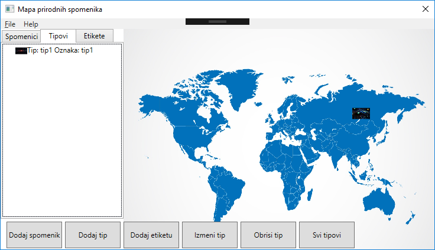Aplikacija takodje korisniku nudi mogucnost da izmeni unete informacije o spomeniku ukoliko je to potrebno. To se vrsi tako sto korisnik mora da oznaci spomenik koji zeli da izmeni iz liste spomenika i da klikne na dugme 'Izmeni spomenik' kao sto je prikazano na sledecoj slici.
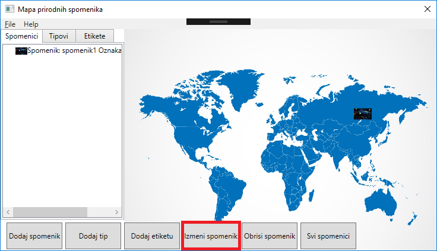Nakon toga otvara se dijalog za izmenu podataka o spomeniku koji lici na dijalog za unos podataka sa tom razlikom da su sada podaci u poljima za unos vec popunjeni i korisnik ima mogucnost da ih menja. To se moze videti na sledecoj slici.
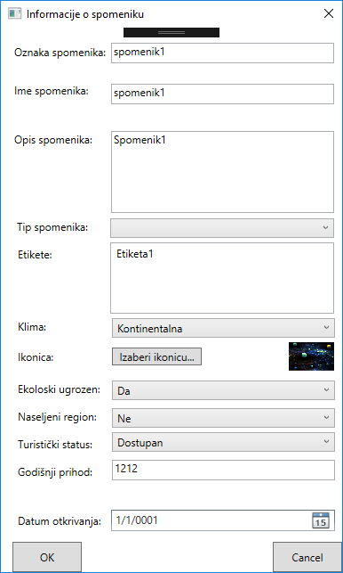Izmena tipa spomenika i etikete spomenika se vrsi na slican nacin kao i izmena spomenika, u tabovima Tipovi ili Etiketa korisnik mora da oznaci tip spomenika ili etiketu koju zeli da menja i da klikne na dugme 'Izmeni tip' ili 'Izmeni etiketu'. Tada se otvaraju prozori za izmenu tipa spomenika ili izmenu etikete spomenika respektivno. Ti prozori izgledaju kao na sledecim slikama.
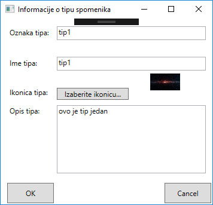 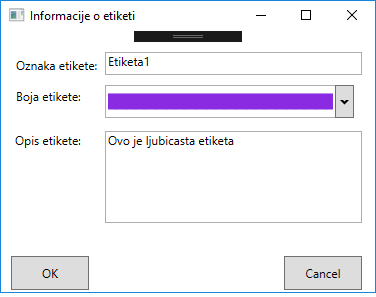Treba naglasiti da se dugmad za izmenu, brisanje i prikaz svih spomenika, tipova spomenika i etiketa smenjuju menjanjem tabova 'Spomenici', 'Tipovi', 'Etikete'
Brisanje spomenika, tipa spomenika ili etikete se vrsi na veoma jednostavan nacin. Sve sto je potrebno uraditi je oznaciti zeljeni spomenik, etiketu ili tip i kliknuti na dugme 'Obrisi...'
Klikom na dugme 'Svi spomenici' otvara se prozor sa tabelarnim prikazom svih kreiranih spomenika. Na tom prozoru korisnik je u mogucnosti da filtrira spomenike po imenu tipa spomenika. Prozor za prikaz svih spomenika izgleda ovako.
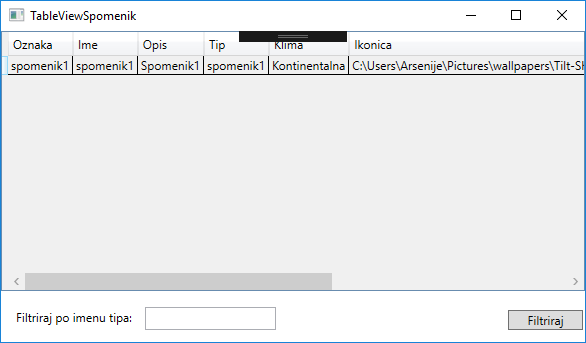Filtriranje se vrsi unosom imena spomenika u tekstualno polje za unos na dnu ekrana i klikom na dugme 'Filtriraj'.
Aplikacija sadrzi meni iz kog se neke akcije u okviru aplikacije mogu izvrsiti. Meni se sastoji od 'File' i 'Help' padajucih menija. File padajuci meni sadrzi dugmice za unos novog spomenika('Novi spomenik'), za unos novog tipa spomenika ('Novi tip spomenika'), za unos nove etikete('Nova etiketa'). Takodje sadrzi dugme 'Otvori' koje ucitava postavke aplikacije koje je korisnik ranije sacuvao i dugme 'Sacuvaj' koje je cuva trenutno stanje aplikacije. Sve se to moze videti na sledecoj slici.
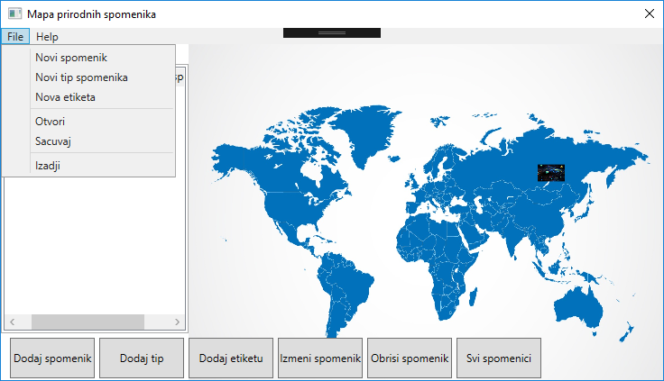